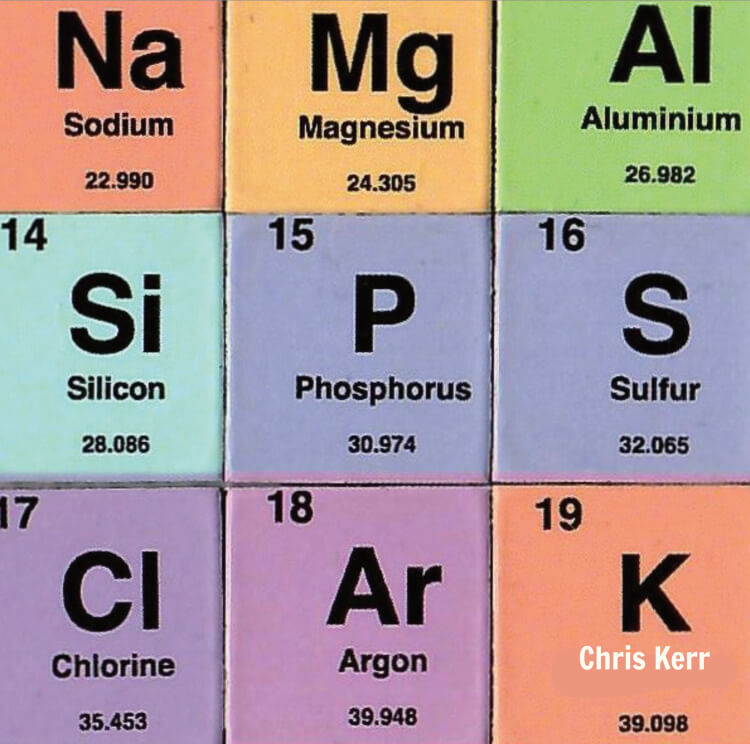
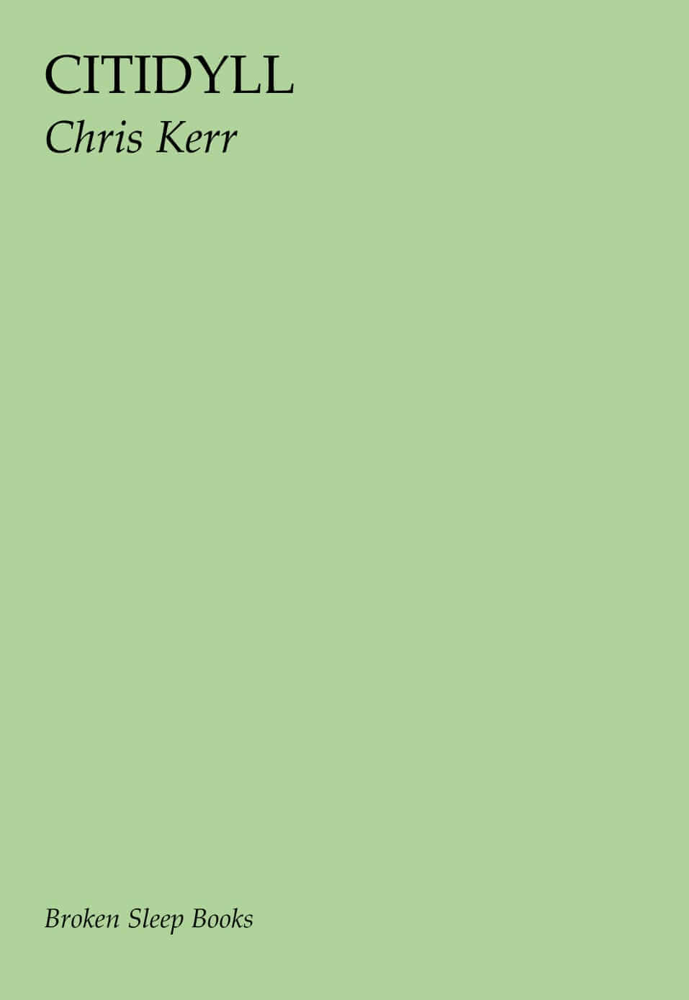

Explore Chris Kerr's poetry
Chris Kerr is a poet who has worked across multiple forms of media, including code, visual poetry and (constrained and lyrical) textual poetry.
Books
./code --poetry

./code --poetry is a collection of code poems, each written in the source code of a different programming language. Every poem is also a valid program that produces a visual representation of itself when compiled and run. ./code --poetry is a collaboration with Daniel Holden.
- Learn more about ./code --poetry on this site
- Purchase the ./code --poetry book from Broken Sleep Books
- View the online version of ./code --poetry at code-poetry.com
Extra Long Matches

Extra Long Matches presents a sequence of visual poems inspired by the longest tennis match in history: Isner-Mahut at the 2010 Wimbledon Championships.
- Learn more about Extra Long Matches on this site
- Purchase Extra Long Matches from Penteract Press
Nam Gal Sips Clark

Nam Gal Sips Clark is a collection of constrained textual poetry and visual poetry exploring the periodic table.
- Learn more about Nam Gal Sips Clark on this site
- Purchase Nam Gal Sips Clark from Hesterglock Press
Citidyll

Citidyll is a rip roaring ride through the decaying heart of the modern metropolis. Rythmically complex and infused with the Wasteland's heap of broken images heaped onto yet more broken images, Citidyll confirms a grave suspicion: the nightmare of the dystopia is full realised and it is where we are living right now. Exuberant and stylish poetry from a huge new talent.
- Learn more about Citidyll on this site
- Purchase Citidyll from Broken Sleep Books
Collaborations
- 'Echolocation', sound poetry with Susie Campbell, published by Angry Starlings (2022)
- 'Last Thrusters', a V[R]erse with Mez Breeze (2021)
- 'Barotrauma' (film poem) with Daniel Holden published by Tentacular magazine (2020)
- 'Barotrauma' with Daniel Holden in Battalion anthology published by Sidekick Books (2018)
A note on hamburgers and the I Ching
If you scroll to the top of this page, on the right there is a "hamburger icon" that consists of three stacked horizontal lines. You're probably familiar with this icon: you can click it to open a navigation menu.
The Unicode character Trigram for Heaven (☰) is sometimes used to represent hamburger icons. This trigram derives from the I Ching, an ancient Chinese system of divination. The Trigram for Heaven is made up of three yang (unbroken) lines. When you press the hamburger icon on this site, it doesn't turn into an X, as you might expect, but another trigram: the Trigram for Earth (☷). This trigram consists of three yin (broken) lines.
The I Ching is significant to me because it represents the intersection of the ineffably human and the technological (a little like ./code --poetry). The I Ching inspired Gottfried Wilhelm Leibniz, who saw in its yin and yang lines an early form of binary. What do you get when you combine these two trigrams into a hexagram? I'll leave that for you to explore.
☰ ☷